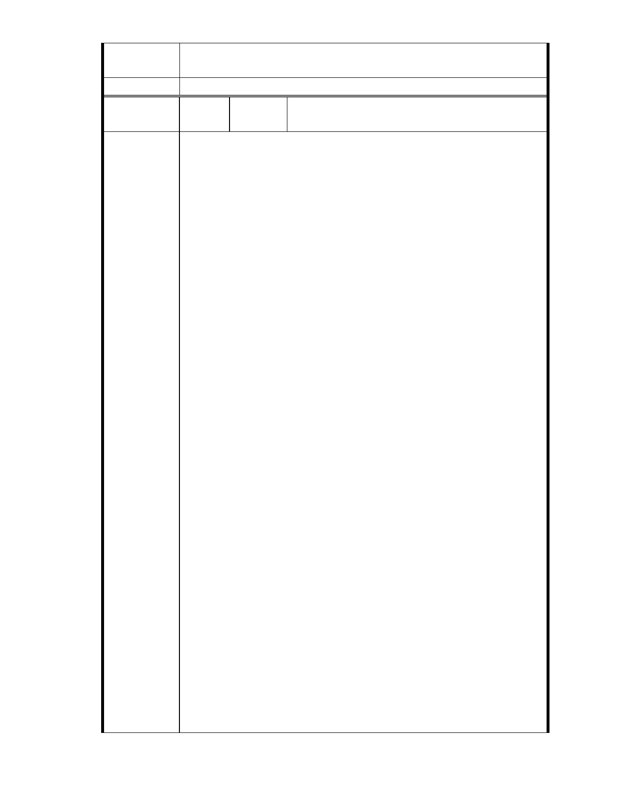

二、後續審理程序將要求申請人加強與在地區民、社會大眾，就基地現
況、規劃方案及環境助益作為等方面加強溝通。
委 員 會 決 議 同編號 1。
市 長信箱（都市發展 局 99.11.9 北市都 規字第
編
號 24
陳情人
09937080800 號函轉）
MA201010260664
慈濟已在大湖地區砍掉大量的樹木做為停車場和回收區，那原本是美麗
的鷺鷥林，白口口聲聲做環保，卻行破壞環境之實，"台北市政府準備解
禁保護區"嗎?懇請千萬不要通過，內湖不要成為第二個汐止，大湖曾遭
受水患之苦，也淹死過人，當初環湖道路也是不必要的開發，昔日常出
現的翠鳥、水鳥消失大半，慈濟真的很可惡，這幾年來非要開發變更內
湖的保護區不可，希望市政府能持秉著良知，不要將違法行為合法化,否
則內湖居民是會群起抗議的。
陳情理由
MA201010270041
慈濟內湖基地保護區開發案停滯 3 年後捲土重來，25 日送進台北市都市
計畫委員會審查。由於爭議過大且缺乏細部計畫，決議補建再審。只是
保護區變更土地使用，讓慈善團體蓋大樓，是否違背了劃定保護的目的，
區委會上，仍沒有具體回應。20 多年前，內湖大湖周遭土地被劃為保護
區，當地地處低漥、地質破碎敏感，後來卻蓋了一條成功路，將大湖一
分為三，將部分湖區回填土方。由於大湖原本是集水區，有調節水量、
滯洪效果，但面積遭人為縮小，導致附近每逢大雨必淹水。1996 年慈濟
買下成功路旁土地，原本打算蓋兒童醫院，後來遭駁回。慈濟變更計畫、
縮小面積後再次提案，打算在當地蓋一棟國際志工大樓，只是因為當地
屬保護區，委員對保護區是否變更有疑慮，多次開會，仍無定論。2007
年大會決議再召開討論會，而兩次討論會後案子暫停，一直到今年 9 月
再度召開第 3 次討論會，10 月送進都委會。由於換了一批委員，又適逢
選舉，民間團體質疑，是否有其他考量，才會在這個敏感時期將案子送
審。保護區並不是「誰」要變更就能變更，必須符合條件。市政府有沒
有搞清楚保護區的定義、保護區要怎樣的條件才可變更？開發許可是發
給在「可開發地區」規劃的開發案。他要求市政府應該公開 3 次討論會
的內容，讓外界知道討論會究竟討論了甚麼。…雖然慈濟表示將改善當
地排水措施，但根本問題在於當地是「保護區」，不會因為慈濟改善了排
水就不再具保護區條件。慈濟提出的排水規劃也讓委員質疑過於簡易，
面臨暴雨時，當地恐將淹水。保護區為什麼能變更、進行開發？台北市
都市發展局回應，台灣的保護區在 50 多年前就劃定，當時沒有仔細規劃，
後來也缺乏通盤檢討，一直維持這樣的劃定。雖是保護區，但市政府認
定保護區上的公共設施、社會福利行為並不違法，可根據都市計畫法第
27 條進行變更。…都市閒置空間還很多，為什麼慈濟非要這塊地不可。
委員也表示，市政府應該對保護區有更積極做為，保護區應該以防災為
- 25 -